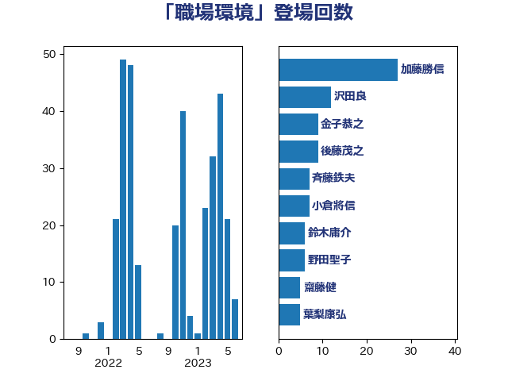

単語「職場環境」

| 加藤勝信 | 自由民主党 | 27 回 |
| 沢田良 | 日本維新の会 | 12 回 |
| 金子恭之 | 自由民主党 | 9 回 |
| 後藤茂之 | 自由民主党 | 9 回 |
| 斉藤鉄夫 | 公明党 | 7 回 |
| 小倉將信 | 自由民主党 | 7 回 |
| 鈴木庸介 | 立憲民主党 | 6 回 |
| 野田聖子 | 自由民主党 | 6 回 |
| 齋藤健 | 自由民主党 | 5 回 |
| 葉梨康弘 | 自由民主党 | 5 回 |
| 深澤陽一 | 自由民主党 | 5 回 |
| 岸田文雄 | 自由民主党 | 5 回 |
| 古川禎久 | 自由民主党 | 5 回 |
| 高木かおり | 日本維新の会 | 4 回 |
| 阿部司 | 日本維新の会 | 4 回 |
| 守島正 | 日本維新の会 | 4 回 |
| おおつき紅葉 | 立憲民主党 | 4 回 |
| 鬼木誠 | 立憲民主党 | 3 回 |
| 道下大樹 | 立憲民主党 | 3 回 |
| 西村康稔 | 自由民主党 | 3 回 |
| 稲富修二 | 立憲民主党 | 3 回 |
| 牧山ひろえ | 立憲民主党 | 3 回 |
| 浅野哲 | 国民民主党 | 3 回 |
| 横沢高徳 | 立憲民主党 | 3 回 |
| 森屋隆 | 立憲民主党 | 3 回 |
| 新垣邦男 | 立憲民主党 | 3 回 |
| 山岸一生 | 立憲民主党 | 3 回 |
| 古賀之士 | 立憲民主党 | 3 回 |
| 音喜多駿 | 日本維新の会 | 2 回 |
| 鈴木義弘 | 国民民主党 | 2 回 |
| 鈴木俊一 | 自由民主党 | 2 回 |
| 金子恵美 | 立憲民主党 | 2 回 |
| 野村哲郎 | 自由民主党 | 2 回 |
| 重徳和彦 | 立憲民主党 | 2 回 |
| 畦元将吾 | 自由民主党 | 2 回 |
| 田畑裕明 | 自由民主党 | 2 回 |
| 田村まみ | 国民民主党 | 2 回 |
| 渡辺猛之 | 自由民主党 | 2 回 |
| 松本剛明 | 自由民主党 | 2 回 |
| 本庄知史 | 立憲民主党 | 2 回 |
| 徳永エリ | 立憲民主党 | 2 回 |
| 山岡達丸 | 立憲民主党 | 2 回 |
| 小沼巧 | 立憲民主党 | 2 回 |
| 吉田久美子 | 公明党 | 2 回 |
| 伊佐進一 | 公明党 | 2 回 |
| 井上哲士 | 日本共産党 | 2 回 |
| 高階恵美子 | 自由民主党 | 1 回 |
| 馬場雄基 | 立憲民主党 | 1 回 |
| 藤井一博 | 自由民主党 | 1 回 |
| 落合貴之 | 立憲民主党 | 1 回 |
| 萩生田光一 | 自由民主党 | 1 回 |
| 芳賀道也 | 国民民主党 | 1 回 |
| 羽生田俊 | 自由民主党 | 1 回 |
| 緒方林太郎 | 無所属 | 1 回 |
| 米山隆一 | 立憲民主党 | 1 回 |
| 篠原豪 | 立憲民主党 | 1 回 |
| 石井浩郎 | 自由民主党 | 1 回 |
| 田中健 | 国民民主党 | 1 回 |
| 清水真人 | 自由民主党 | 1 回 |
| 河野太郎 | 自由民主党 | 1 回 |
| 永岡桂子 | 自由民主党 | 1 回 |
| 水岡俊一 | 立憲民主党 | 1 回 |
| 森田俊和 | 立憲民主党 | 1 回 |
| 柴田巧 | 日本維新の会 | 1 回 |
| 山崎正恭 | 公明党 | 1 回 |
| 小林史明 | 自由民主党 | 1 回 |
| 宮本岳志 | 日本共産党 | 1 回 |
| 大野泰正 | 自由民主党 | 1 回 |
| 大家敏志 | 自由民主党 | 1 回 |
| 塩川鉄也 | 日本共産党 | 1 回 |
| 城井崇 | 立憲民主党 | 1 回 |
| 和田義明 | 自由民主党 | 1 回 |
| 吉田はるみ | 立憲民主党 | 1 回 |
| 吉川赳 | 無所属 | 1 回 |
| 古賀千景 | 立憲民主党 | 1 回 |
| 勝部賢志 | 立憲民主党 | 1 回 |
| 加田裕之 | 自由民主党 | 1 回 |
| 佐藤英道 | 公明党 | 1 回 |
| 伊東良孝 | 自由民主党 | 1 回 |
| 今井絵理子 | 自由民主党 | 1 回 |
| 中野洋昌 | 公明党 | 1 回 |
| 中川正春 | 立憲民主党 | 1 回 |
| 三上えり | 立憲民主党 | 1 回 |